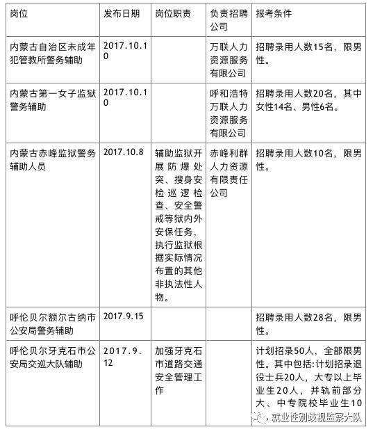
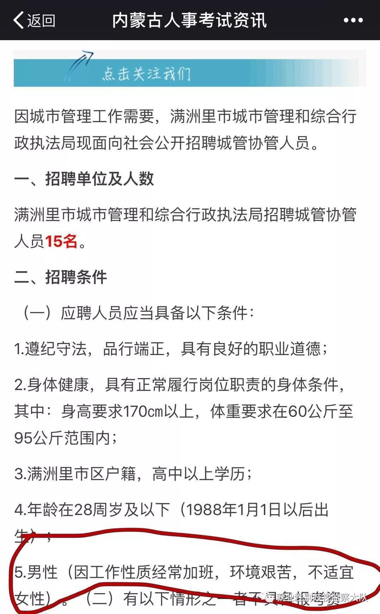

警务类岗位招聘可否限制性别?环境艰苦是否能成为拒绝女性的理由？大队邀你一起来讨论。
提到警察，你脑中浮现出的是怎样的形象？习以为常的“警察叔叔”的形象有没有让你意识到这个行业内女性的身影相比之下较为少见。
今天，大队想以内蒙古自治区最近的几则辅警招聘信息为例，邀请你来一起讨论，究竟这些岗位只招男性是否合理。

根据《就业服务与就业管理规定》第十六条均明确规定，国家保障妇女享有与男子平等的就业权利。在录用职工时，除国家规定的不适合妇女的工种或者岗位外，不得以性别为由拒绝录用妇女或者提高对妇女的录用标准。那么，哪些工种和岗位是国家规定的不适合妇女的呢？根据《女职工劳动保护特别规定》，
女职工禁忌从事劳动范围如下：
(一)矿山井下作业;
(二)体力劳动强度分级标准中规定的第四级体力劳动强度的作业;
(三)每小时负重6次以上、每次负重超过20公斤的作业，或者间断负重、每次负重超过25公斤的作业。
二、女职工在经期禁忌从事的劳动范围：
(一)冷水作业分级标准中规定的第二级、第三级、第四级冷水作业;
(二)低温作业分级标准中规定的第二级、第三级、第四级低温作业;
(三)体力劳动强度分级标准中规定的第三级、第四级体力劳动强度的作业;
(四)高处作业分级标准中规定的第三级、第四级高处作业。
三、女职工在孕期禁忌从事的劳动范围：
(一)作业场所空气中铅及其化合物、汞及其化合物、苯、镉、铍、砷、氰化物、氮氧化物、一氧化碳、二硫化碳、氯、己内酰胺、氯丁二烯、氯乙烯、环氧乙烷、苯胺、甲醛等有毒物质浓度超过国家职业卫生标准的作业;
(二)从事抗癌药物、己烯雌酚生产，接触麻醉剂气体等的作业;
(三)非密封源放射性物质的操作，核事故与放射事故的应急处置;
(四)高处作业分级标准中规定的高处作业;
(五)冷水作业分级标准中规定的冷水作业;
(六)低温作业分级标准中规定的低温作业;
(七)高温作业分级标准中规定的第三级、第四级的作业
对照以上规定，你认为女性是可以胜任以上招聘中的岗位?招聘中只招男性是否合理？在筛选招聘信息的时候，小编还看到一条比较有意思的，是内蒙古人事考试资讯公众号在2017年10月15日发布的满洲里市城市管理和综合行政执法局招聘15人中，写了仅限男性并给出理由，因工作性质经常加班，环境艰苦不适宜女性。

这个理由也应该是大多岗位不招女性的原因，那么“经常加班出差，工作环境艰苦，存在一定危险性……”等理由到底合不合理？作为女性的你是否愿意去做这类工作？
除去这些情况，还有一个问题大队想邀你一起讨论，上面的招聘中，女子监狱的招聘要求男性和女性都有，那反之女性是否适合在男子监狱内任职？
作为女性的你，愿意在这个岗位任职吗？留言给我们吧，我们会筛选精彩的讨论分享给大家哦～～